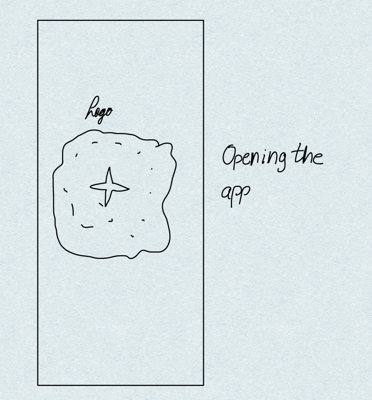
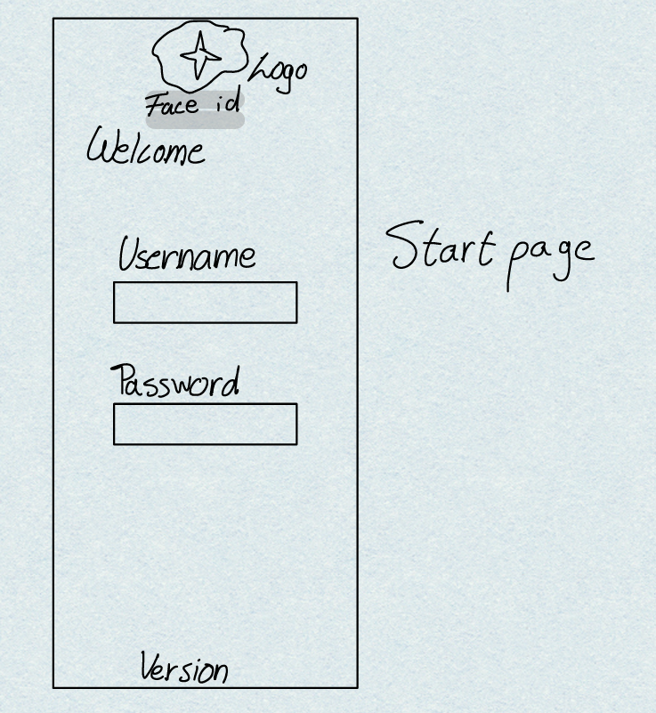
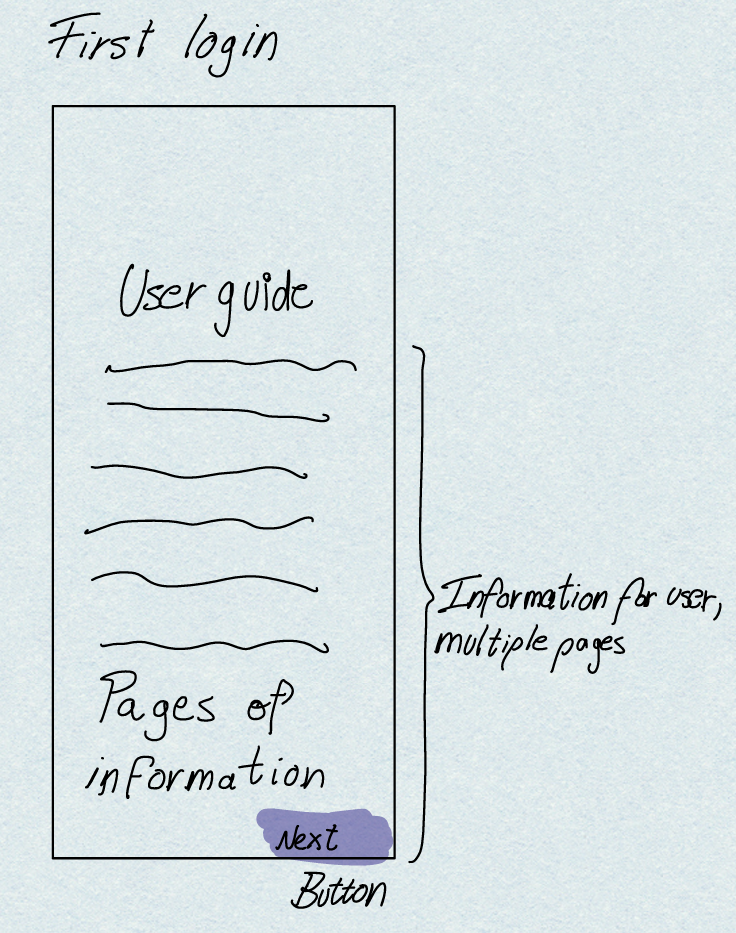
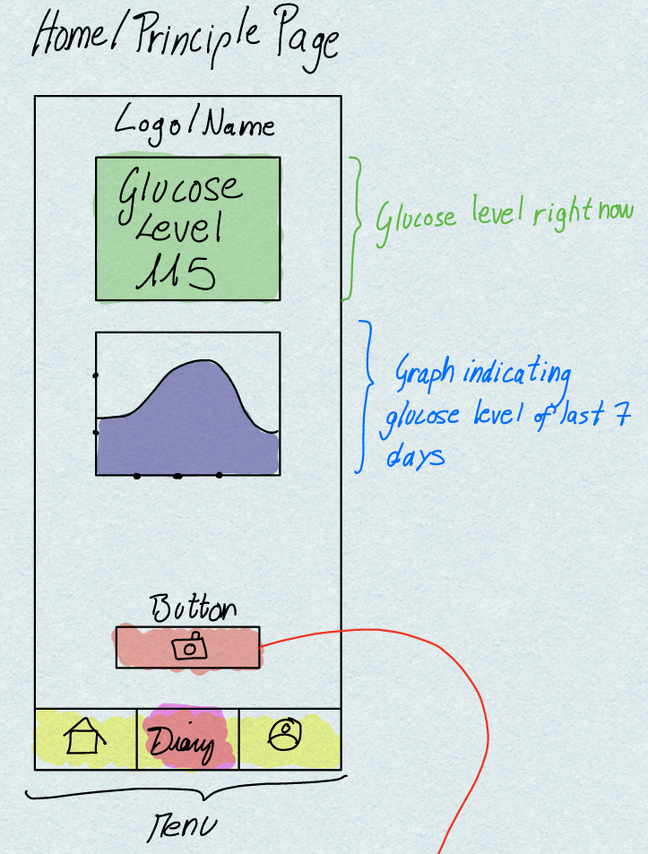
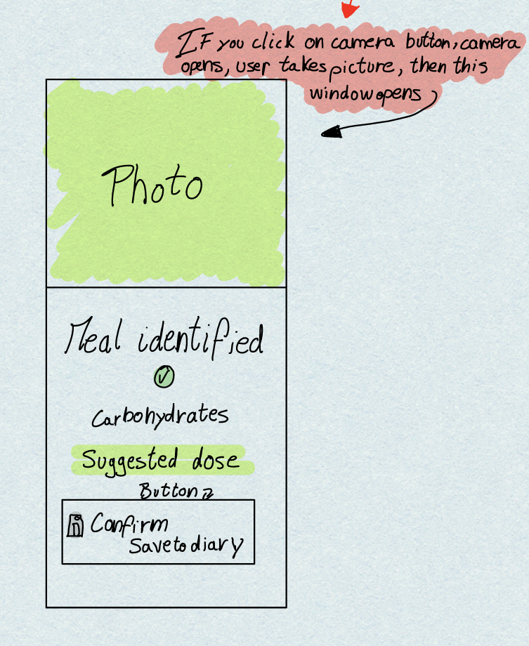
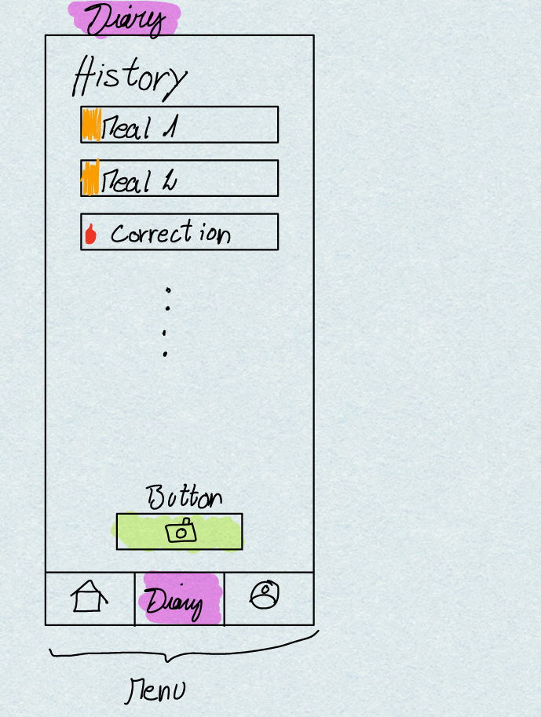
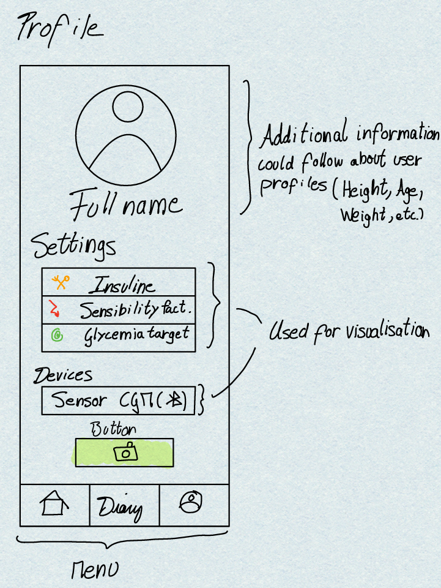

Stage 3: 1st Prototype (Mock-up)
Objective: Design of the first low/medium fidelity interface prototype, scenario testing preparation, and usability observations.
Testing Preparation
📋 User Briefing (Script read to participants)
"Welcome and thank you for participating! Managing Type 1 Diabetes requires constantly balancing food intake, physical activity, and insulin. SmartGlycoAI is an application designed to relieve this burden. It estimates the carbohydrates in your meals, tracks your glucose via a sensor, and suggests the correct insulin dose so you don't have to do the math manually. During this test, we want you to interact with the interface naturally to complete a few tasks. Please 'think aloud' as you go, so we understand your thought process. Remember, we are testing the interface, not you!"
Evaluation Roles
The Computer
Responsible for manipulating the paper prototype, changing screens, and reacting to the user's touch inputs without speaking.
The Facilitator
Reads the briefing, presents the scenarios, and encourages the user to think aloud throughout the evaluation session.
The Observers
Take detailed notes on usability problems, user hesitation, and navigation errors during each task.
The 3 Scenarios (From Stage 2)
Meal Time at a Restaurant
João is at a restaurant and is unsure about the carbohydrate count of his pasta dish. Glancing at his Home screen, he views his stable 6-hour glucose trend graph. He opens SmartGlycoAI's meal logging module, takes a photo of his plate, and the app estimates 65g of carbs. Based on his current CGM reading of 110 mg/dL, the app suggests a precise insulin dose before he starts eating.
A low on the way home
At 6 p.m. João is on the bus home after the gym. His phone vibrates with an alert: the app predicts his glucose will reach 65 mg/dL in 20 minutes and suggests eating 15 g of fast-acting carbohydrates. He opens the alert, drinks a small pack of juice he always carries, and taps "Register correction". Later that evening, at home, he opens the Diary to check his day. He remembers that at lunch he left part of the rice on the plate, so he ate fewer carbohydrates than the 60 g he registered, which may explain the low in the afternoon. He opens the lunch entry, changes the carbohydrates to 45 g so that the diary shows what he really ate, keeps the 4.0 units he actually took, and saves the changes.
Routine Clinical Check-up
Dr. Joana is preparing for a consultation with João. She opens the platform's professional dashboard to review his data from the past month. She notices frequent hypoglycemic events during the night and decides to adjust his baseline insulin ratio directly within the app's professional settings.
Paper Prototype & Storyboards
Prototype Interface Photos
Hand-drawn low-fidelity screens used during the paper prototype evaluation sessions. Click on any screen to enlarge.

Opening the App

Prototype Sketch 2

Prototype Sketch 3

Prototype Sketch 4

Prototype Sketch 5

Prototype Sketch 6

Prototype Sketch 7
Storyboards (Task Flow)
Visual step-by-step navigation sequences illustrating how users complete the Stage 2 scenarios.
Evaluation Observations
| Usability Problem Found | Proposed Solution |
|---|---|
| Issue 1: Users hesitated when looking for the diary edit button. It was not clear that tapping the entry would open the edit mode. | Add a visible pencil icon (✏️) next to each diary entry so the edit action is immediately recognizable. |
| Issue 2: During the alert scenario, users dismissed the notification but didn't know where to find the suggested carb correction afterwards. | Keep a persistent "Active Alert" banner at the top of the Home screen until the user logs the correction. |